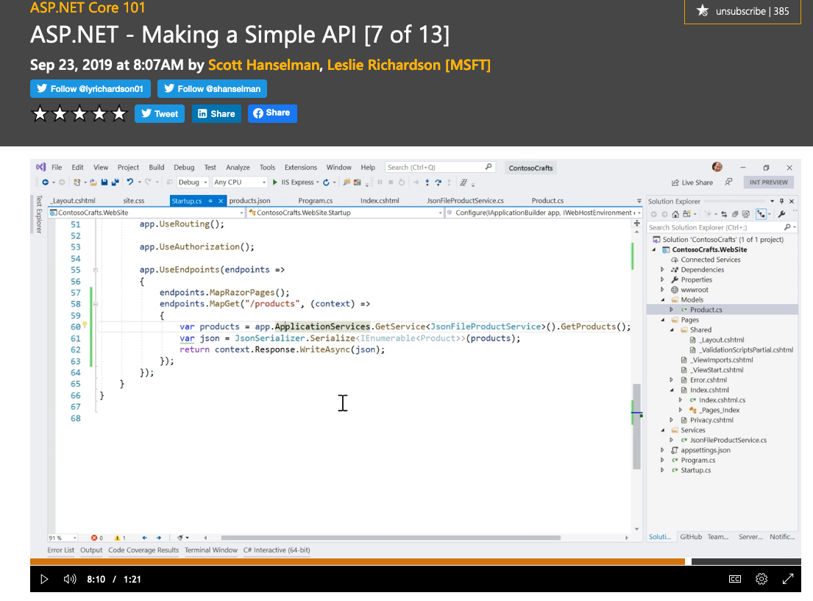
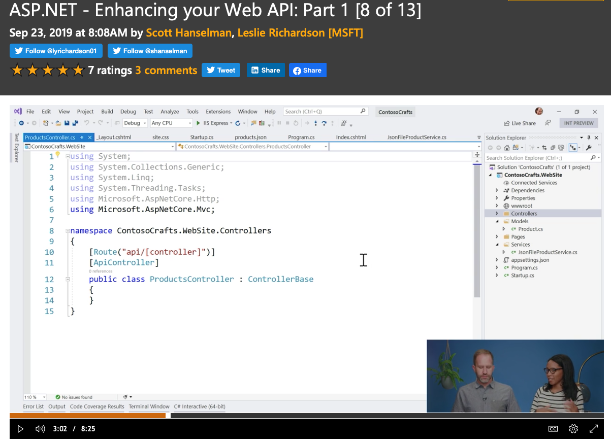
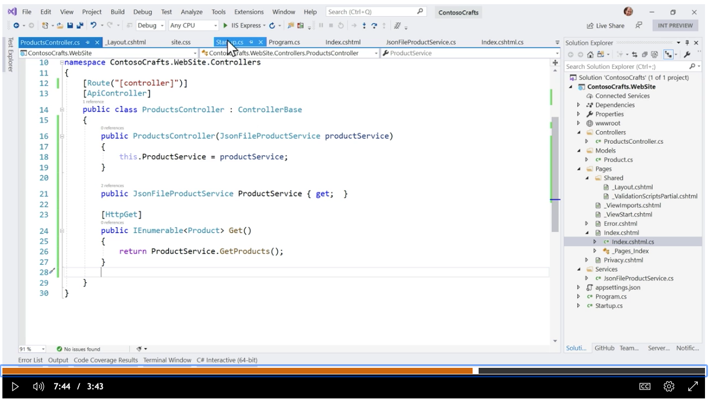
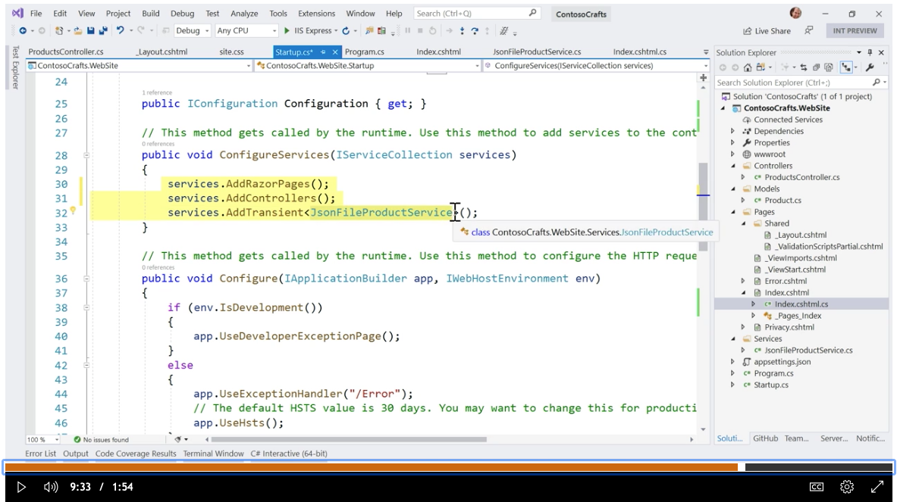
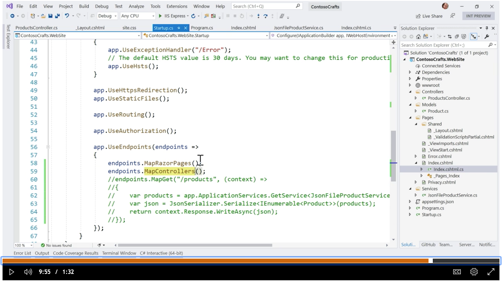
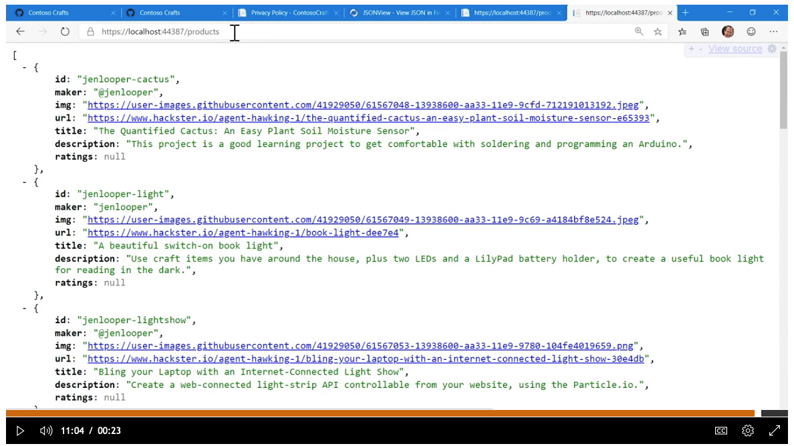

2020-06-20 ASP.NET 簡易型API
Wiki條目，Application programming interface有很清楚介紹 API。
今天所講的 API 是指其中的 Web APIs。早期是 XML(Extensible Markup Language)的天下，現在偏向使用 JSON (JavaScript Object Notation)。
從教程和 ASP.NET 的文檔來看，內定的 API 是 JSON 格式，也就是說，如果要產生 XML 的 API，要多點設定的工作。注意，純粹是設定，不做額外人工編程。
查看視頻
Endpoints是最直觀的切入點，教程很認真直接在原有的 MapRazorPages的基礎上，做一個同級別的 MapGet。最重要的是，演示如何直接在裡面寫些代碼，做一些調用和轉換。感覺到，這是這幾年的趨勢，先講一個
60分的，然後要提升到80分或是90分的。現在 C# 推動著每個檔案的內容要容易維護，情願有多個檔案。

Razor 並不是和 MVC 對立，而是在其基礎上延伸出來的。這個可以從 Class 的繼承看出來。這教程的這一段是帶出 MVC 的 C，Controller, 單獨的 Controller。因為项目已有 Models 和 Pages 分別是 M 和 V。MVC 也正是實現 API 的基石。

單獨 的 Controller 並不能生效。

必需 先加到 Services。

然後，Use。在這情境是用在 Endpoints。

JSONVIEW ，附帶一提，流覽器的 extension 也進入了整合，https://github.com/bhollis/jsonview/，昨天才知道，連微軟的最新 Edge 也可以直接使用 Chrome 系列。

今天在 ASP.NET 所做的 API，一開始是直接在 Endpoint 做，然後移到 Controllers。
單獨定義了
Controllers 並不會直接生效，要先 Add 然後 Use。
ASP.NET 很明顯的，是以中大型的框架出發，這樣子，提高了入門的門檻，卻有利後續的團隊協作。希望少寫已經有的功能的代碼，多用組件，要用組件就要按框架，尤其是 Service 的方式，先提供再使用。 提供方和使用方，不必也不要緊密結合。要能個自獨立，靈活組裝。
按項目的複雜和細緻需求，肯定是需要寫代碼，要放到適當的位置，要預想某一或任一環節要有彈性升級或另用替代組件。